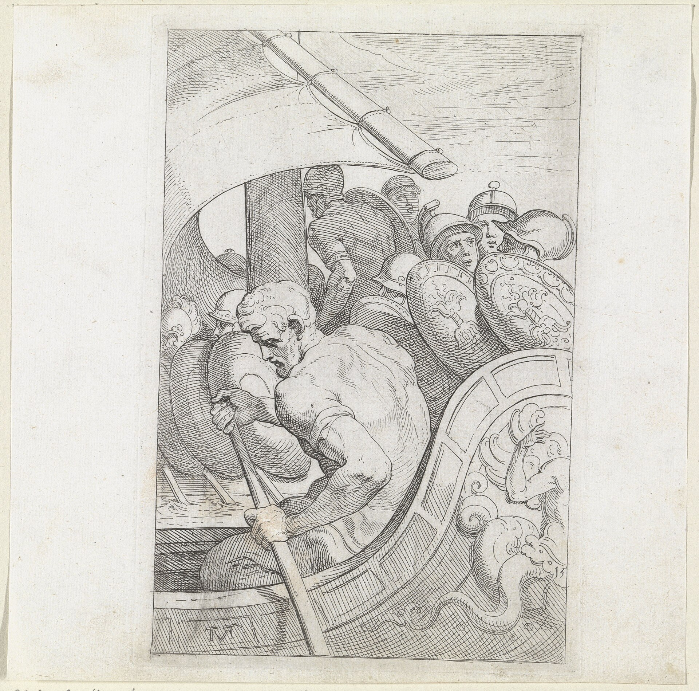
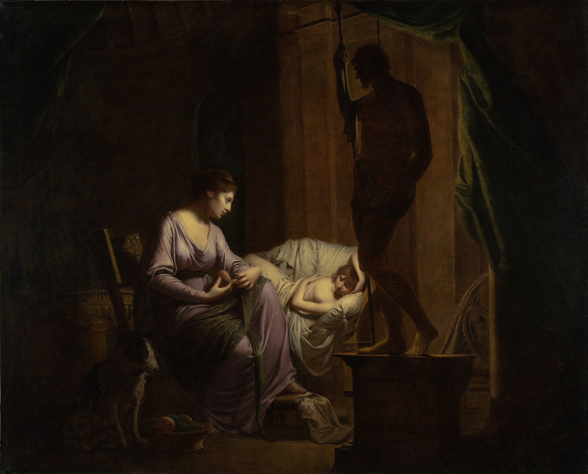
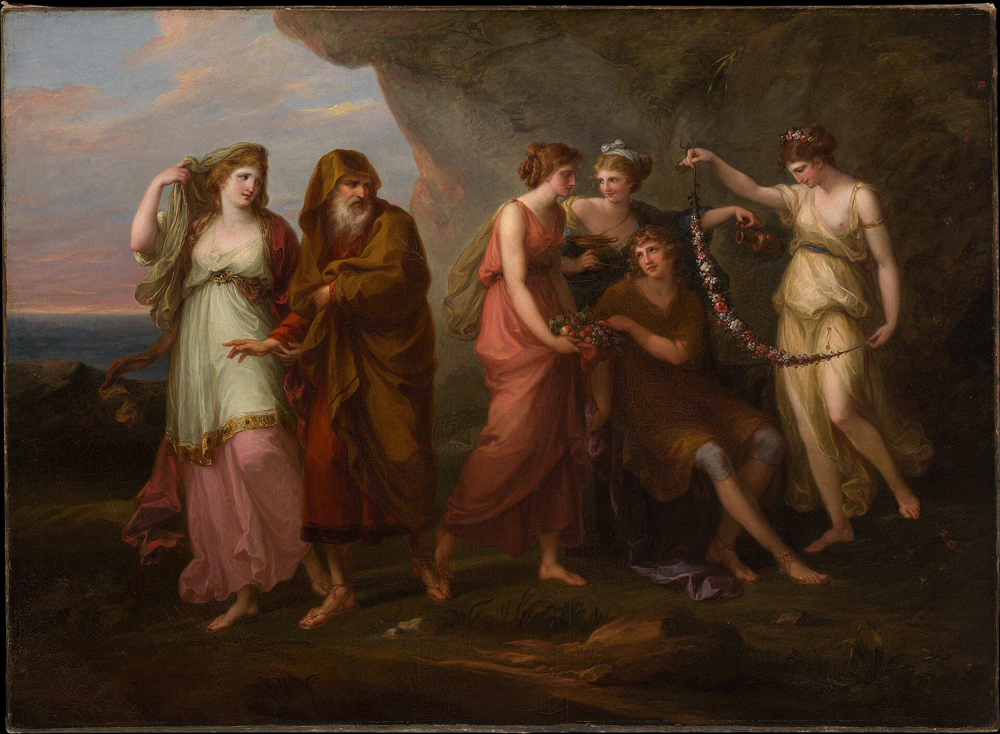
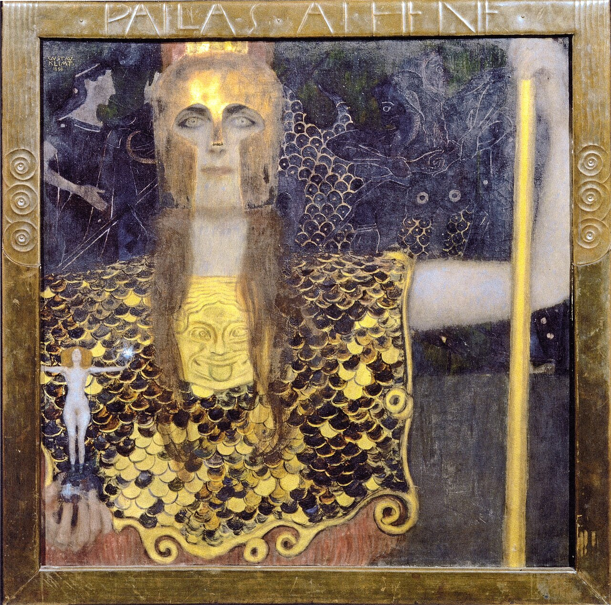
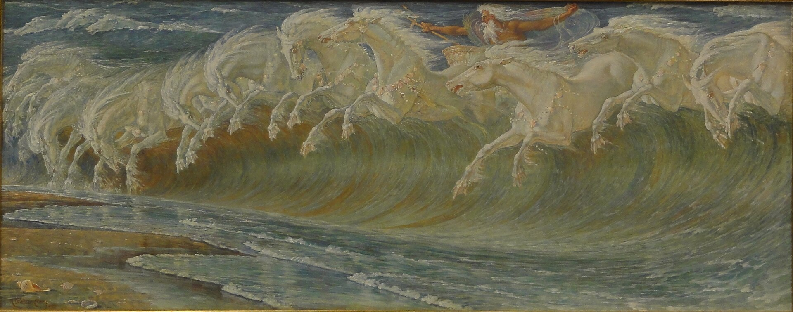
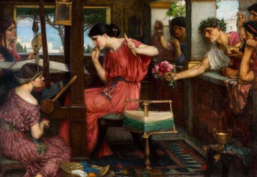
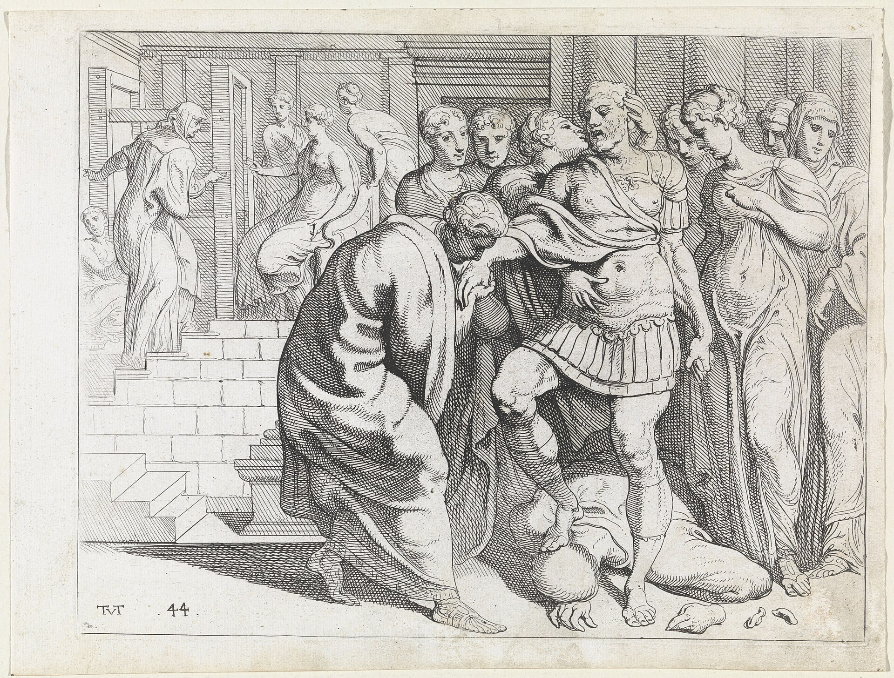

Одиссея Гомера
краткий разбор по песням
«Одиссея» — древнегреческая эпическая поэма, приписываемая Гомеру (ок. VIII в. до н. э.), сложенная гекзаметром (≈12 000 стихов, 24 песни). Она рассказывает о возвращении царя Итаки Одиссея домой после Троянской войны — десятилетнем странствии, полном испытаний, — и о том, как он отвоёвывает свой дом у женихов, осаждавших его верную жену Пенелопу.
Рассказ ведётся не по порядку (приём in medias res): поэма начинается, когда война давно кончилась, главные приключения Одиссей пересказывает сам уже задним числом (песни 5–12), а параллельно идёт линия его сына Телемаха.
Композиция
I Телемахия Песни 1–4
Итака без Одиссея; взросление и путешествие его сына Телемаха в поисках вестей об отце.
II Странствия Песни 5–12
Одиссей покидает Калипсо, попадает к феакам и рассказывает им о приключениях: киклоп, Цирцея, царство мёртвых, сирены, Сцилла и Харибда, быки Гелиоса.
III Возвращение и месть Песни 13–24
Итака, череда узнаваний, состязание с луком, расправа над женихами и финальное примирение.
- 13Возвращение на Итаку
- 14У свинопаса Эвмея
- 15Возвращение Телемаха
- 16Узнавание отца и сына
- 17Одиссей-нищий во дворце. Пёс Аргус
- 18Бой с Иром
- 19Беседа с Пенелопой. Шрам и Эвриклея
- 20Канун расправы
- 21Состязание с луком
- 22Избиение женихов (Мнестерофония)
- 23Узнавание Пенелопой. Тайна ложа
- 24Тени женихов. Лаэрт. Примирение
Главные герои

Гравюра «Одиссей у кормила» (серия «Странствия Одиссея», Т. ван Тюльден). Общественное достояние Одиссей. Царь Итаки, «многохитрый» (πολύμητις), главный герой.
Джозеф Райт из Дерби. «Пенелопа, распускающая саван» (1783–84). Общественное достояние Пенелопа. Его верная жена, под стать мужу хитроумием.
Ангелика Кауфман. «Телемах и нимфы Калипсо» (≈1782). Общественное достояние Телемах. Их сын, взрослеющий на наших глазах.
Густав Климт. «Паллада Афина» (1898). Общественное достояние Афина. Богиня-покровительница Одиссея.
Уолтер Крейн. «Кони Нептуна» (1892). Общественное достояние Посейдон. Гневается на Одиссея за ослепление своего сына Полифема.
Джон Уильям Уотерхаус. «Пенелопа и женихи» (1912). Общественное достояние Женихи. Наглая знать, проедающая дом Одиссея (вожди Антиной и Евримах).
Гравюра «Одиссея встречают верные слуги» (серия «Странствия Одиссея», ван Тюльден). Общественное достояние Эвмей, Эвриклея, Лаэрт. Верные слуги и старый отец героя.
Сквозные темы
- Возвращение домой — ностос (νόστος). Высшая ценность поэмы: Одиссей отвергает даже бессмертие ради родины.
- Хитроумие — метис (μῆτις). Ум побеждает там, где бессильна грубая сила («Никто» против киклопа).
- Гостеприимство — ксения (ξενία). Мерило людей и чудовищ; за нарушение карают и люди, и боги.
- Верность и расплата. Верность Пенелопы и слуг противопоставлена бесчинству женихов.
- Узнавание. Череда узнаваний (по шраму, по ложу, отцом и сыном) ведёт к развязке.
- Гнев богов. Посейдон преследует героя; Афина и Зевс в финале восстанавливают порядок.